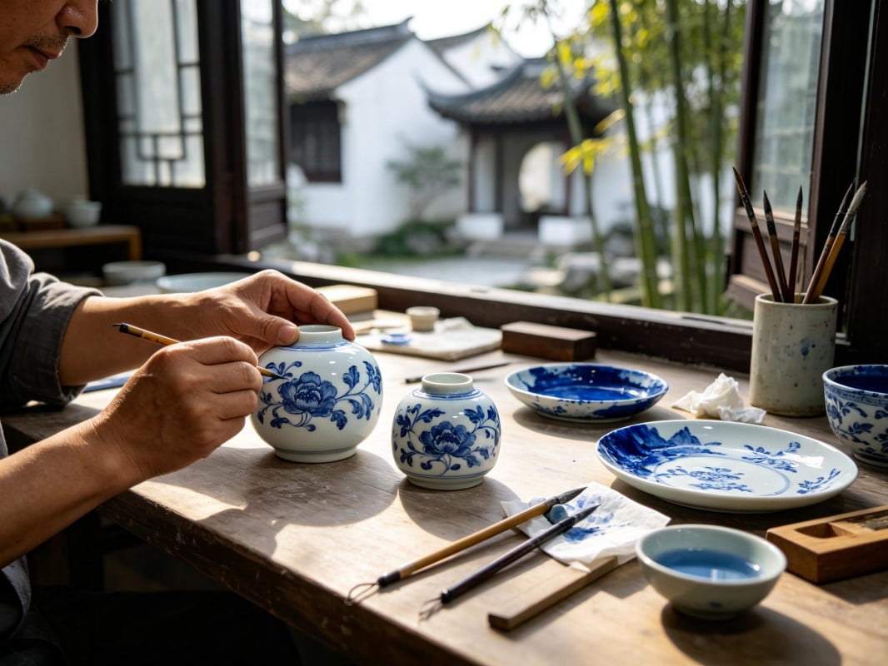
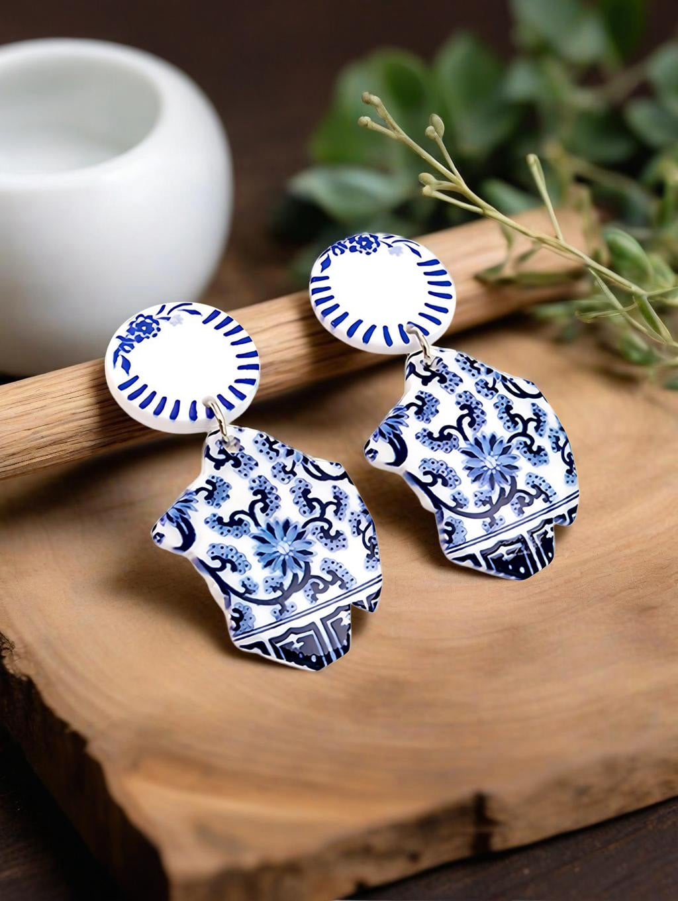
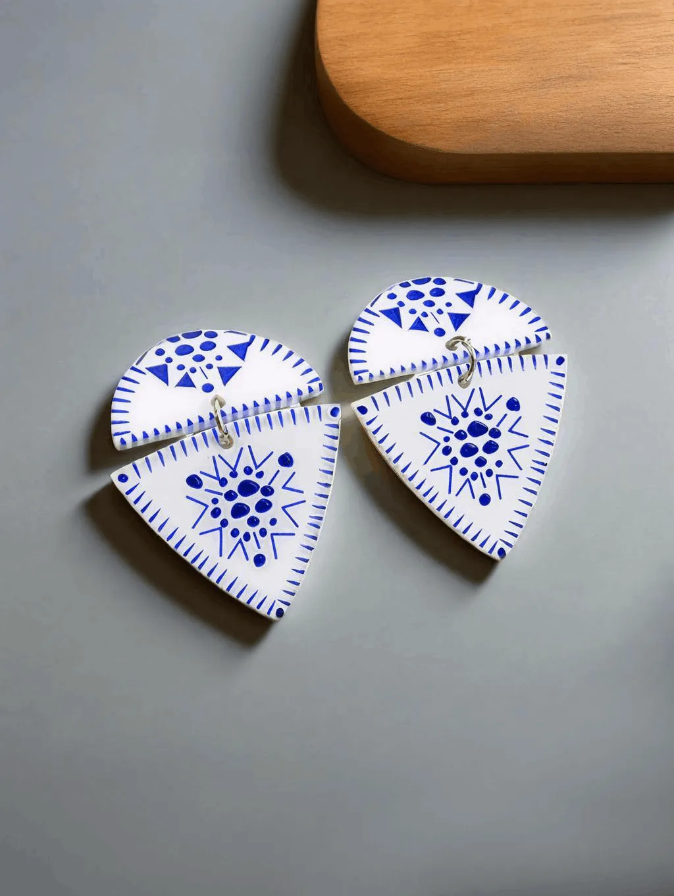
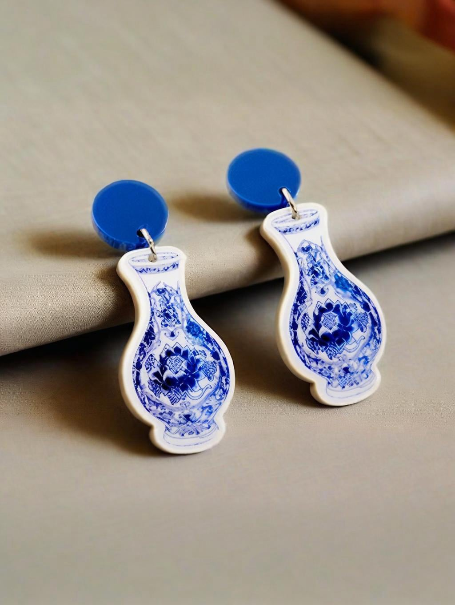
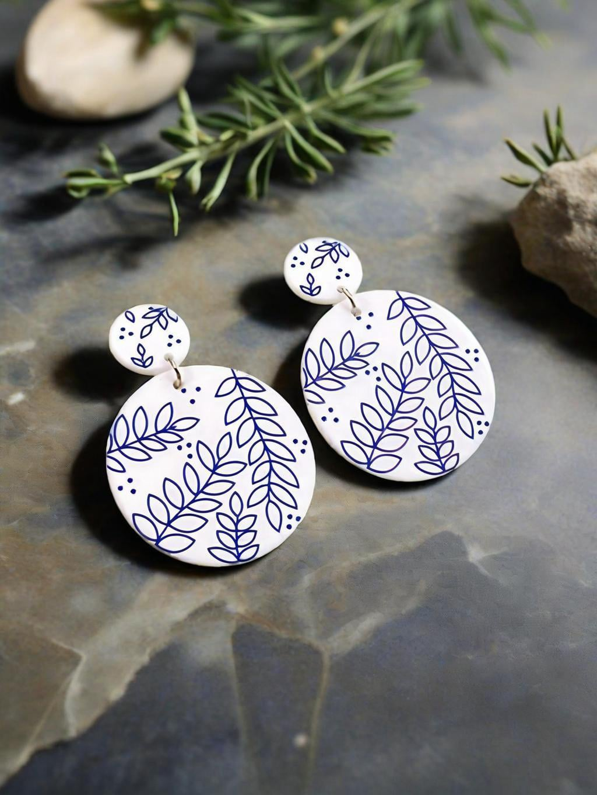
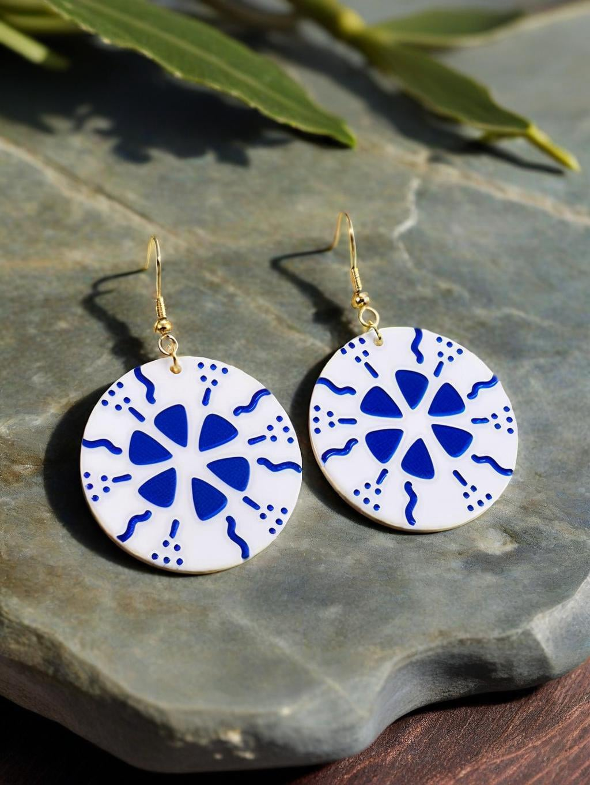
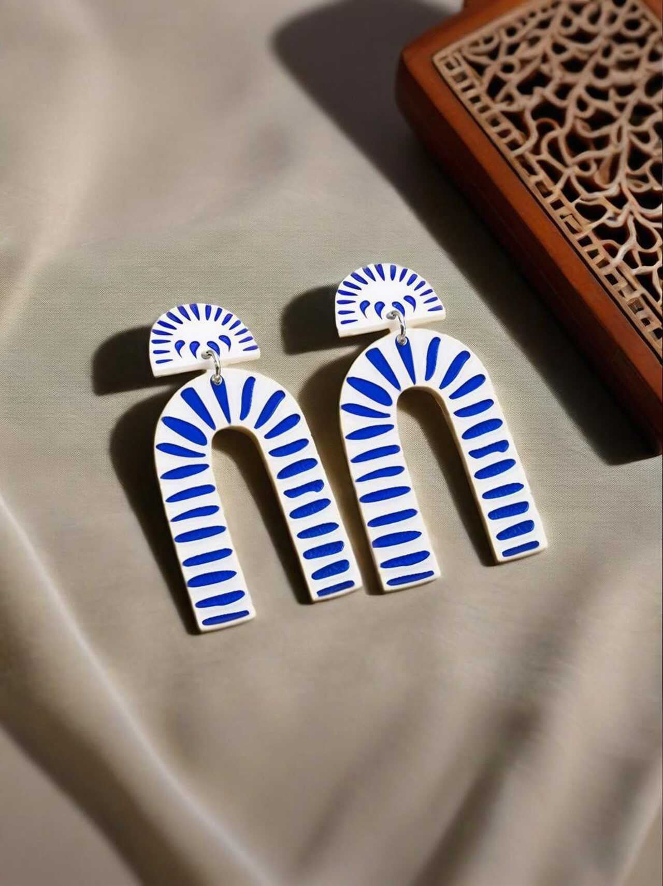

Blue-and-white porcelain originated in Jingdezhen during the Yuan Dynasty and has been a globally celebrated icon of classical Chinese aesthetics for over 600 years. Ancient artisans used white porcelain as canvas and natural cobalt ore as ink, painting mountainscapes and interlocking vines with just two colors — blue and white. This minimalist yet refined visual language carries the gentle, understated elegance of the East, blending artistic beauty, traditional auspicious meanings, and positive feng shui energy.
I. Blue & White: The Classical Aesthetic Foundation with Auspicious Energy
For centuries, blue-and-white porcelain has held to its signature bicolor palette. This is not merely an aesthetic choice — it is deeply rooted in traditional Five Elements philosophy and the wisdom of blessings.
Porcelain White – Associated with Metal (金)
White corresponds to the "empty space" in Chinese ink painting — symbolizing purity, clarity of mind, and openness. In feng shui, Metal energy attracts noble supporters and dissolves conflicts. Wearing white is believed to purify negative energy, bringing peace and smooth progress in all endeavors.
Natural Cobalt Blue – Associated with Water (水)
The muted, misty blue tone is derived from natural mineral pigments, evoking distant skies and tranquil lakes. Water energy governs wealth, wisdom, and enduring vitality.
Together, the Metal-Water synergy of blue and white creates a balanced, flowing energy field — believed to accumulate good fortune and support steady career growth.
The low‑saturation blue‑and‑white palette flatters all skin tones and pairs effortlessly with any outfit, carrying a uniquely Chinese sense of quiet elegance and refined taste.

II. Traditional Motifs: Blessings Woven into Every Detail
The decorative patterns on these earrings are faithfully reproduced from classic Ming and Qing imperial kiln designs. All motifs feature smooth, rounded lines — which in feng shui are believed to attract positive energy and ward off negative influences. Each pattern carries its own blessing:
- Interlocking floral scrolls – Continuous vines represent everlasting blessings, family prosperity, and enduring wealth.
- Circular key‑fret patterns & enclosed geometric forms – Unbroken, closed loops symbolize completeness and unity. The closed design is said to guard wealth and good fortune.
- Minimalist floral, leaf, and landscape motifs – Clean and refined, these designs calm the mind, soften one's presence, and are believed to attract helpful mentors and allies.
- Vase-shaped silhouettes – The Chinese word for "vase" (*píng* 瓶) sounds like the word for "peace" (*píng* 安). This design carries the wish for safety and security throughout the seasons.


III. Ancient Art, Modern Wear: Blue-and-White Aesthetics Reimagined as Earrings
Traditional porcelain wares — being large, heavy, and fragile — are best appreciated as display pieces and are difficult to incorporate into daily wear. Our designers have deconstructed classic vessel silhouettes, authentic blue-and-white palettes, and legendary auspicious motifs, reimagining them as lightweight, wearable earrings — transforming museum‑worthy classical beauty into everyday accessories.
The collection features a rich variety of silhouettes: arched porcelain shards, classical vase shapes, fan‑shaped panels, circles, droplets, diamonds, and leaf forms — all faithfully recreating traditional hand‑painted blue-and-white lines, while toning down the weight of antiquity to suit modern daily styling.
You don't need to collect large antique porcelain pieces. A single pair of earrings at your ear carries the elegance of classical Chinese aesthetics, balancing feng shui energy, and a full set of timeless blessings from the East.
Banibuba Curated Selection
Banibuba brings you a curated collection of blue‑and‑white Chinese‑style earrings — crafted for those who cherish classical Eastern culture. Each piece inherits the authentic blue‑and‑white palette and traditional auspicious motifs, carrying with it centuries of refined elegance and the quiet blessings of peace and prosperity.
Let me know if you need any adjustments.

Blue White Porcelain Inspired Half Moon Acrylic Earrings

Traditional Blue Floral Porcelain Drop Acrylic Earrings

Chinese Plum Blossom Pattern Acrylic Earrings

Double Layer Blue Floral Acrylic Drop Earrings

Fan Shape Blue White Acrylic Earrings

Chinese Vase Inspired Blue Acrylic Earrings

White Vase Shape Blue Porcelain Earrings

Round interlocking floral blue and white earrings

Slim Vase Shape Blue Porcelain Earrings

Leaf Pattern Blue White Acrylic Earrings

Snowflake Pattern Blue Acrylic Earrings

Diamond Wave Pattern Acrylic Earrings

Willow Leaf Chinese Style Acrylic Earrings

Diamond Leaf Pattern Blue Earrings

Blue Leaf Hoop Acrylic Earrings

Double Hoop Blue White Acrylic Earrings

Hollow Floral Blue Porcelain Hoop Earrings

Arch Shape Blue White Acrylic Earrings